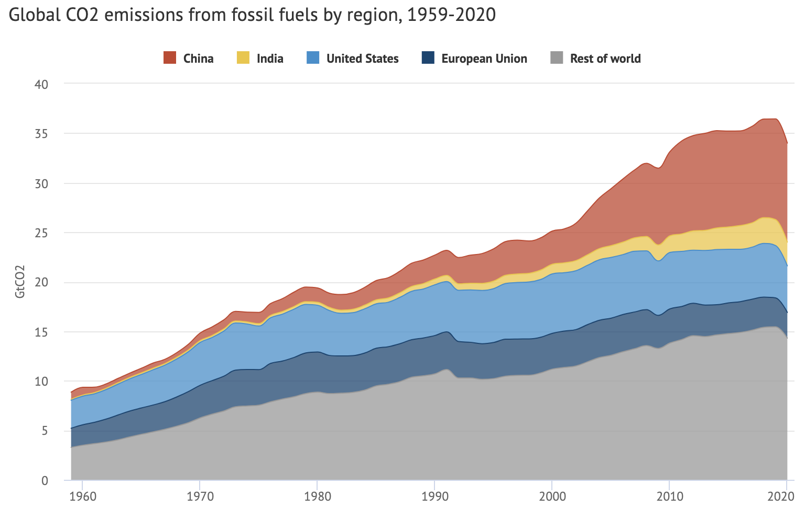
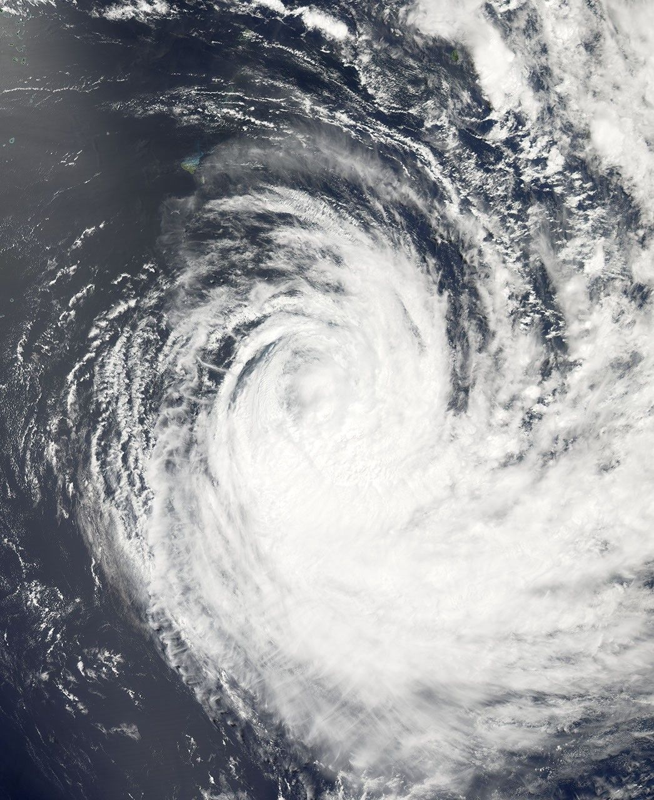

Information About Climate Change
Causes of Climate Change

Climate change is mostly caused by the burning of fossil fuels globally. The burning of fossil fuels leads to the emission of greenhouses gases such as carbon dioxide, methane, and nitrous oxide (the latter being one that is commonly forgotten). These gases blanket the planet in what is known as the greenhouse effect, which warms up the Earth.
As seen in the graph to the left, we are still seeing increasing carbon dioxide emission (the main greenhouse gas causing climate change), though we know it is damaging our planet. China is by far the biggest producer of carbon dioxide, but India, the USA, and the European Union also contribute a significant amount. The drop at the end of the graph is not an indication that these emissions will fall, however, as the fall was due to the Covid-19 pandemic. This means that emissions in recent times is likely higher than what is noted here, and will only continue to increase.

Effects of Climate Change
Climate change causes more frequent and intense droughts and heatwaves, leading to longer wildfire seasons and the melting of ice caps. Due to the ice melting (not only in the poles, but on high mountains too), we also see rising sea levels around the world. As well as these things, more intense rainfall and wind in tropical cyclones are occurring due to climate change.
In New Zealand, we have seen this in recent events. Some examples of this are Cyclone Vaianu in April 2026, and the January 2026 storms (lasting from around the 15th to the 22nd of January). The latter of these two had broken the record for the wettest day in Whitianga (with records starting from 1987) and Tauranga (with records starting from 1910), as well as the record for the wettest January day in Whakatane (with records starting from 1974). However, this is only in New Zealand.
If we look to Europe, we see that this year (2026) they are experiencing record-breaking temperatures during their summer (starting from about late May). In some places, temperatures have been exceeding 40 degrees Celsius, and it's reportedly only going to get worse as the summer goes by. More than 1,300 deaths have been attributed to this extreme heatwave.
In summary, climate change is hurting out planet, with devastating effects on not only our environment, but in urban areas too.